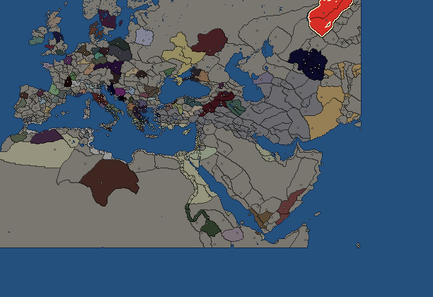
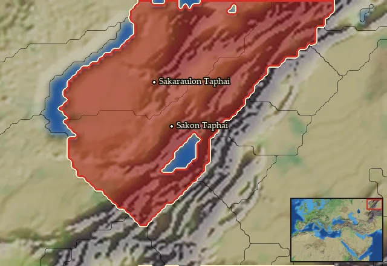

RTR: Imperium Surrectum
RTR: Imperium SurrectumSaka


- difficulty Very Difficult
- Scythian culture
- believes
 Scythian
Scythian - 2 settlements
- capital Sakon Taphai
- 7,150 manpower
- 5 characters
- 10 faction units
- 438 regional units
The campaign brief
"But the best known of the nomads are those who took away Baktriane from the Greeks, I mean the Asioi, Pasianoi, Tocharoi, and Sakarauloi, who originally came from the country on the other side of the Iaxartes River that adjoins that of the Sakai and the Sogdianoi and was occupied by the Sakai." – Strabo, The Geography, 11.8.2
The horse is the master of the pastures, and we, the masters of the horse. Under the shade of great mountains, and on the soil of loving rivers, we rear our horses, our flocks, and our children. Our pastures are the widest, our horses the most hardy, our flocks the largest, our burial mounds the greatest, and our children the strongest of this wide Earth. We have many brothers strewn about the great plain; the Massagetians, the Dahaeans, the Sogdians, the Chorasmians, and many others further afield. Like true brothers, however, we are not immune to quarrels among ourselves.
Even within our kin, not all those who call themselves "Saka" are united, and some have been at times bitted by the kings of the Chorsarians, who claimed dominion over the rest of the Earth, owning lands many times larger than the great plain. Disunited, many fell to the depredations of the dwellers of earthen tents. Despite the servitude, the strength of our people was never in doubt. Those of our brothers sent to faraway lands to fight for other kings could be bested on horseback by none of the many hundreds of tribes they assembled to fight. Perhaps it was this pride that softened the weight of the chains, for they were always known to be the best horsemen of all nations of the Earth, by friend and foe alike.
But there are those of us who were never conquered. We are the eldest, the strongest, the most illustrious, and the most gilded. Our armour is impenetrable, our horses untiring, and our bowshot unmatched.
Even our weaker Massagetian neighbours tell tales of one of their queens killing the first Chorsarian king Kurush many moons ago, and their last king, a Yauna, could barely conquer the small warband of one of our lesser chieftains. The ever-bitted Sogdians resisted this same king with our aid, and killed many of the Yauna usurpers, who were powerful enough to conquer the Earth from the Chorsarians and put the Sogdians in chains, but even they did not dare face a full army of the Saka and traipse far into the plains.
These kings built their wooden and stone camps at the edge of the great pastures and named them after themselves in their folly, thinking perhaps their sodden huts could hold off our arrows, or their names cause awe and fear. The men of the Yauna kings have already come to find the city of their god Sikandar in ruins, and the giving Silis flowing next to it covered in blood and corpses. They penetrated the great meadow, but came back with empty hands, content only in rebuilding the ruins, naming it once more in honour of their new god Antiyokas. Perhaps they need to be taught another lesson before they properly learn.
Despite our strength, our foes are numerous and all around us. To our east there are many great peoples who are second only to us in strength, but even larger in numbers. To our west, the Massagetians and Chorasmians cannot be trusted to come to our aid in time of need, much less not seek to profit from our misfortune; though the same favour could be first paid by us. The Dahaeans are also a bulwark in the west, and a most dangerous foe if they choose to bring their flocks to the grazing lands of ours, though perhaps also a very powerful ally. To the south, the Sogdians remain weak and enchained, yearning for their lost freedom in their hearts; there are also the Yaunas and their stone camps advancing into the great meadow, a perfect tomb full of riches for us to spoil. The great meadow itself is home to too much bickering among siblings, among the many Saka peoples it nourishes. Could there be a king or a queen capable of uniting them all, or can the chiefs and the people come together like the Dahaeans have done? The horses in the great plain; as a herd they are stronger than as one. It is why they are the masters of the pastures, and why we, the Saka, are masters of the horse.
Starting settlements
Saka begins with 2 settlements and 7,150 manpower.
| Settlement | Region | Size | Manpower | Already built | Settlement | Region | Size | Manpower | Already built |
|---|---|---|---|---|---|---|---|---|---|
| Sakon Taphai (capital) | Sakaia | large town | 4,750 | 10 buildings | Sakaraulon Taphai | Sakaraulia | town | 2,400 | 6 buildings |
What is already built in each settlement
Sakon Taphai, in Sakaia: Governor's Villa, Wooden Palisade, Homeland, Region Information Scroll, Roads, Horse Trainer (Rural), Local Barter, Nomad Communal Herding (Husbandry), Basic Armoury, Cisterns (Sanitation)
Sakaraulon Taphai, in Sakaraulia: Governor's House, Homeland, Region Information Scroll, Local Barter, Nomad Communal Herding (Husbandry), Horse Trainer (Rural)
Starting diplomacy
Saka begins the campaign with no allies, no trade agreements and no wars.
Like every faction, it is also at war with the  Free Peoples, who hold every settlement no faction does.
Free Peoples, who hold every settlement no faction does.
Homeland
Saka's homeland is 2 regions. Only there can it install the Homeland government (more on homelands).

Starting characters
| Name | Role | Age | Name | Role | Age | Name | Role | Age | Name | Role | Age |
|---|---|---|---|---|---|---|---|---|---|---|---|
| Spargapeithes | General | 38 | Azes | General | 45 | Amorges | General | 20 | Skunkha | General | 35 |
| Skyles | General | 30 |
Reforms
Open to every faction: Military innovations have arrived!, Second wave of military innovations have arrived!.
Units you can recruit
The same as in the main campaign.